安全な自動照合列選択の確認のために
このガイドは、Knowledge Matching Suite の「L3-1」と呼ばれる改善が正しく機能しているかを、 実際の画面操作を通じて確認していただくためのものです。
対象となるのは、PDF・Excelの文書を「照合用JSON」に変換し、2つの文書（JSON A / JSON B）を 自動で照合する「Matching（照合）」ツールです。
Matchingツールは、2つのJSONを読み込んだ際に「どの項目同士を照合すればよいか」を 自動で推定する機能を持っています。
id_scheme_version のような内部管理用の技術情報を、誤って照合列として
選んでしまうことがありました。その結果、無関係なデータ同士が「一致」と判定される
不具合（誤検出）が発生していました。詳しい記録項目は KMS_L3-1_Human_Evaluation_Checklist_JA.csv（HE-01〜HE-22）を
ご覧ください。
01-JSON-Creation/PDF/ の中の
HTMLファイルをブラウザで開きます。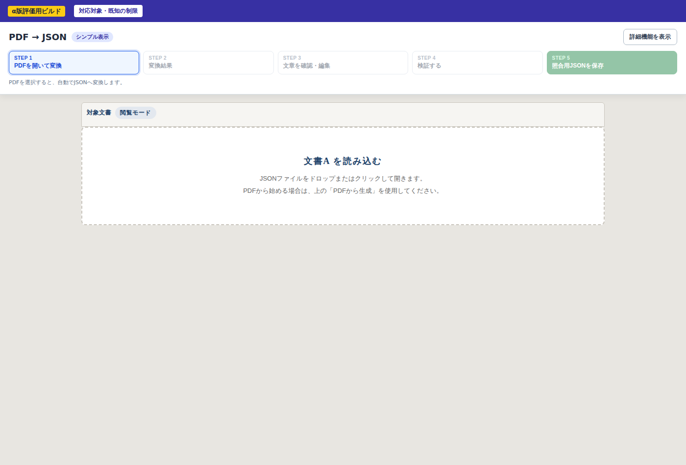
Samples/L3-1-Human-Evaluation/A_source_PDF_fixture.pdf）を選択します。自動で
変換が始まります。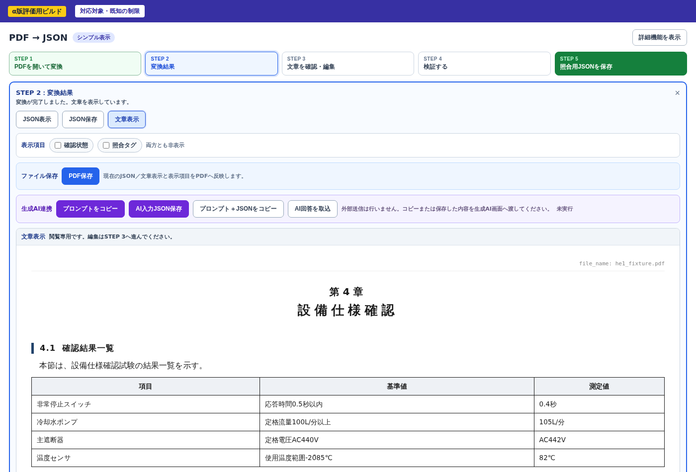
C_PDF_matching.json がこれに当たります）。01-JSON-Creation/Excel/ の中の
HTMLファイルをブラウザで開きます。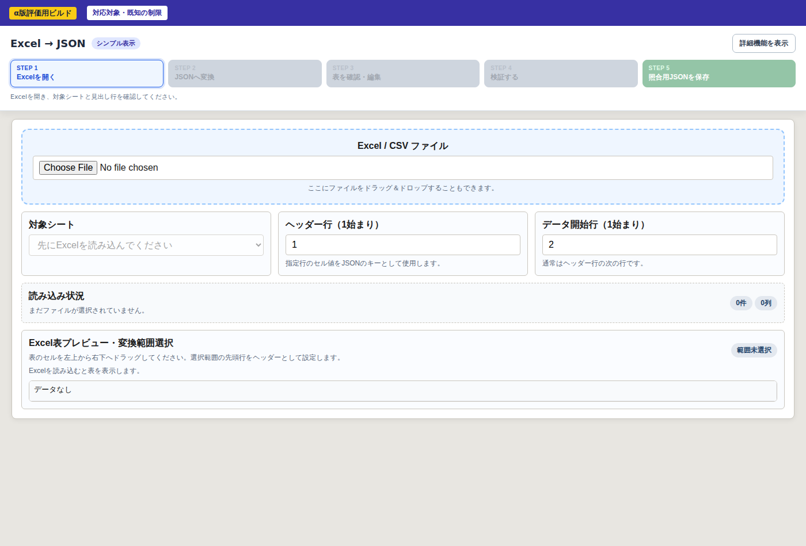
Samples/L3-1-Human-Evaluation/B_source_Excel_fixture.xlsx）を選び、「JSONへ変換」を
押します。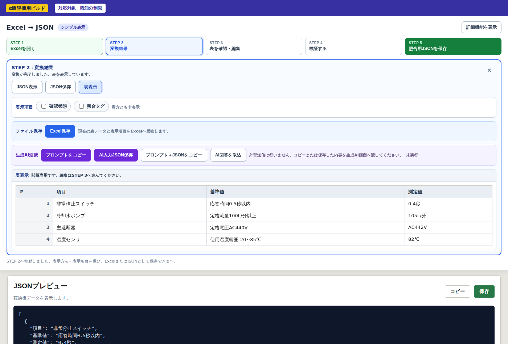
D_Excel_matching.json がこれに当たります）。04-Matching/index.html を
ブラウザで開きます。C_PDF_matching.json、
「JSON B」に D_Excel_matching.json を選択します。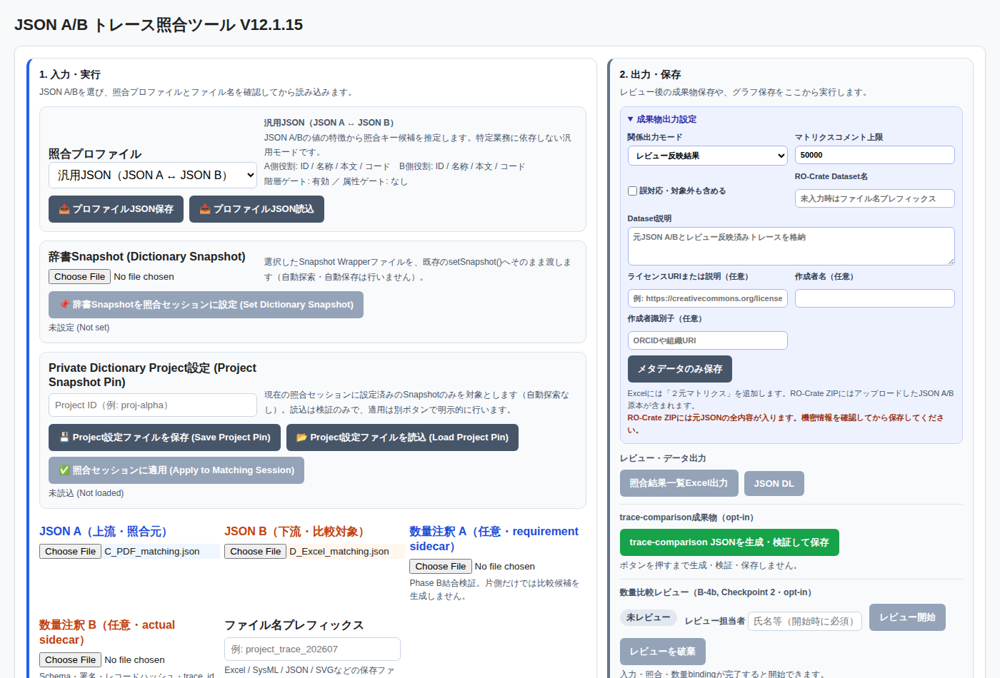
読み込みが完了すると、「照合ロジック設定」タブに、自動で選ばれた照合ペアが表示されます。
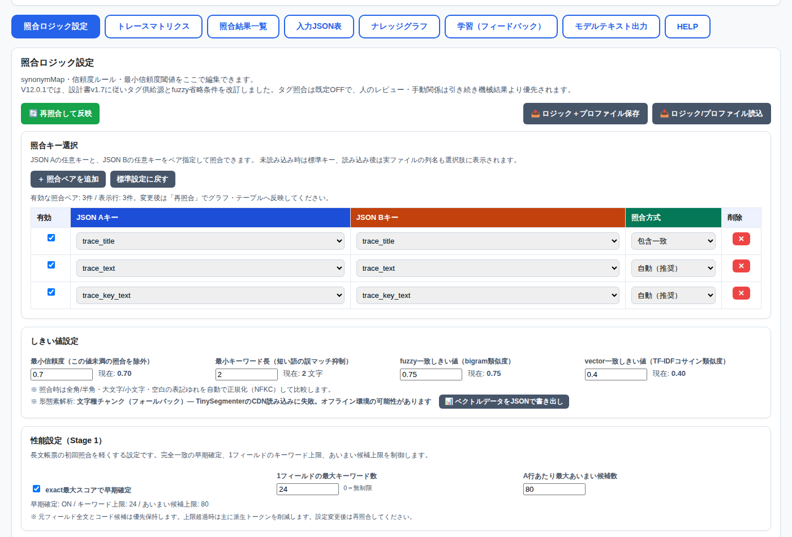
id_scheme_version・schema_version・trace_id のような
内部管理用の項目名が表示されていないことを確認してください。業務項目が何も見つからない場合（例：技術的なメタ情報だけのJSON）にどう表示されるかを、
負のコントロール用サンプル（E_negative_control_JSON_A_metadata_only.json /
F_negative_control_JSON_B_metadata_only.json）で確認できます。
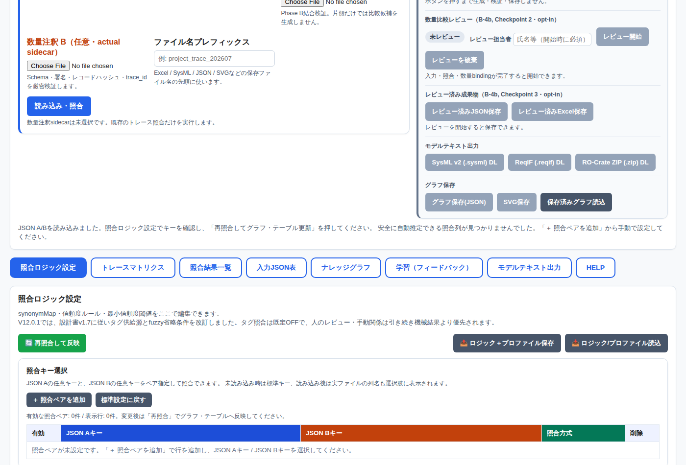
自動選択に頼らず、自分で照合列を指定することもできます。「＋ 照合ペアを追加」を押すと、 新しい行が追加されます。
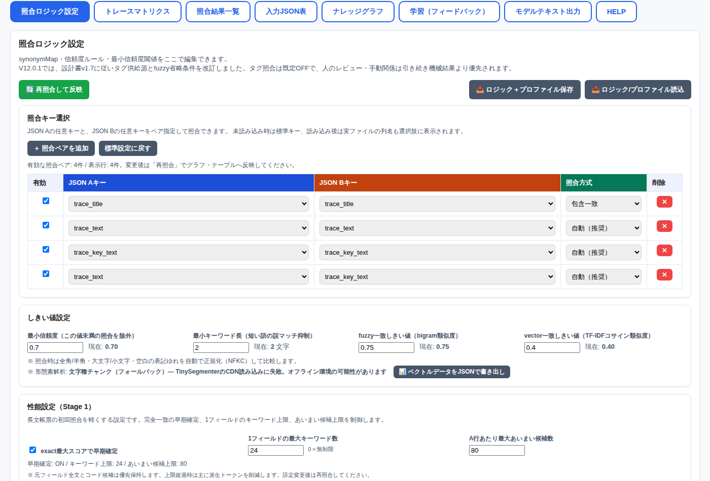
プルダウンには、読み込んだJSONに実際に存在する列名がすべて表示されます。 （安全性チェックは「自動選択」の場面だけに働くもので、手動選択そのものを制限するものではありません。）
「辞書Snapshot」欄から、Snapshotファイルを選択して設定できます。評価用サンプル
（G_sample_dictionary_snapshot.json）を使って確認してください。
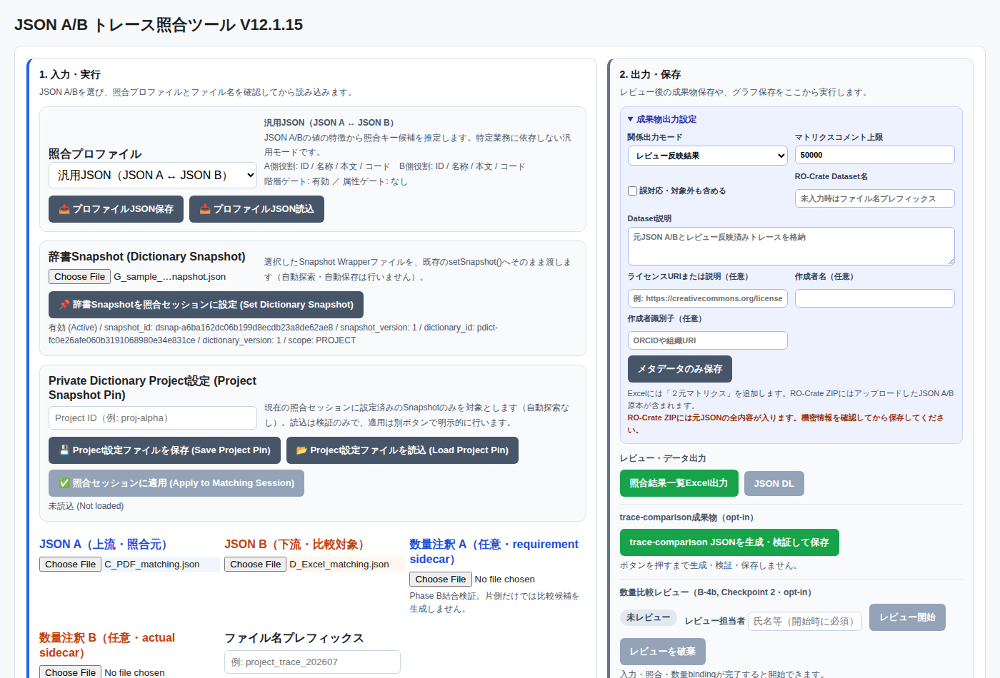
KNOWN_LIMITATIONS_L3-1_JA.txt（8番）をご覧ください。ここでは まったく同じ2つのJSON（I_dictionary_effect_json_a.json /
J_dictionary_effect_json_b.json）を使い、「辞書Snapshotを設定する前」と
「設定した後」で ただ1件の対応関係だけ がどう変わるかを確認します。
違いを自分で探す必要はありません。以下の手順どおりに、指定した場所を見てください。
回転式旋回レバー 有効 合格 となっている
行（非常停止スイッチの行）を見つけてください。ここで確認すること：この行の「照合JSON B件数」が 0 であることを確認してください （展開ボタン▶が表示されない場合も、対応する候補が無い＝正しい状態です）。
K_dictionary_snapshot.json を辞書Snapshot欄に設定し、「タグ生成を有効化」
「タグを照合に使用」の両方にチェックを入れて「再照合して反映」を押します。
「照合結果一覧」タブに戻り、STEP 1と同じ行（非常停止スイッチの行）を展開（▶）してください。ここで確認すること：展開した行に、次の情報がすべて表示されていることを確認してください。
| 項目 | 表示される内容 |
|---|---|
| 接続先・件数 | EMOの行が1件（照合JSON B件数が0→1に変化） |
| confidence / method | 0.88 / tag |
| 辞書の表示 | 「辞書寄与あり」 |
| original term（元の語） | EMO |
| resolution_type（解決区分） | APPROVED_ALIAS |
| resolved canonical（解決後の正規語） | 非常停止スイッチ |
HE-14（対応なし）とHE-15（対応あり・辞書寄与あり、詳細つき）を見比べて、 「Snapshotを設定したことで何が変わったか」を自分の言葉で説明できるか確認してください。
冷却水ポンプ 定格流量100L/分以上 105L/分
の行を展開してください。この行にも辞書の別名解決情報は存在しますが、実際の対応は
method: exact（タイトル完全一致）で決まっており、辞書の表示は「辞書寄与あり」ではなく
「辞書解決あり・この照合には未使用」となります。辞書情報の有無と、その情報が実際に
対応関係の決め手になったかどうかは、別のことです。「照合結果一覧」タブで、対応関係の一覧が確認できます。
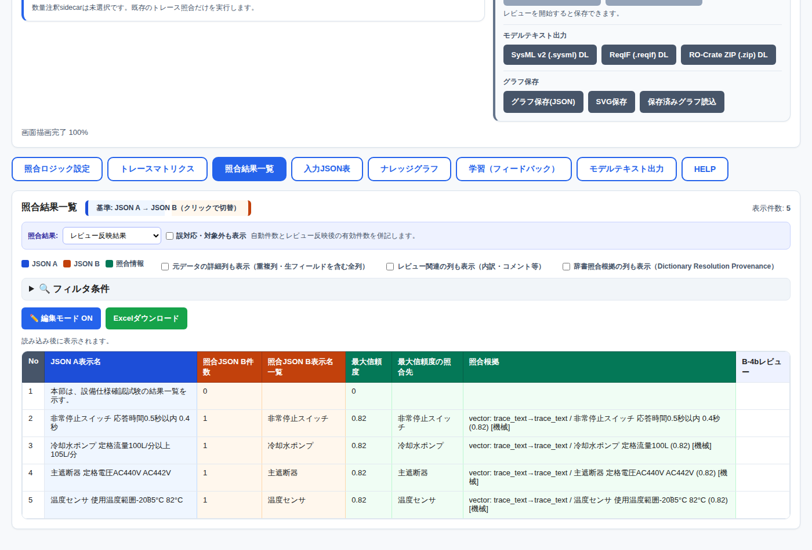
照合結果一覧の各行には「照合根拠」列があり、どのフィールドがどのように一致したかが
表示されます（例：vector: trace_text→trace_text / 非常停止スイッチ...）。
「元データの詳細列も表示」にチェックを入れると、元のJSONの内容も併せて確認できます。
「ナレッジグラフ」タブでは、対応関係をグラフとして表示できます。「照合結果一覧Excel出力」 からはExcelファイルとして結果を保存できます。
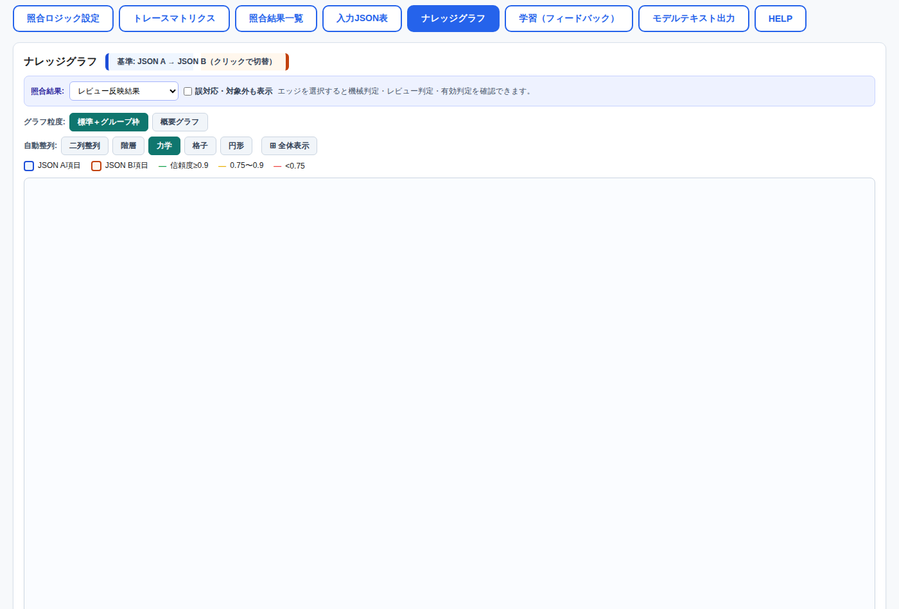
KNOWN_LIMITATIONS_L3-1_JA.txt（7番）をご覧ください。HE-15の状態（K_dictionary_snapshot.json を設定した状態）のまま、
「照合結果一覧Excel出力」を押してExcelファイルを保存し、開いてください。
照合結果一覧 ／ 照合結果_JSON_A基準 ／
照合結果_JSON_B基準 ／ 辞書照合根拠。ここで確認すること：
照合結果_JSON_A基準 シートで非常停止スイッチの行（照合JSON B件数=1）を探す照合結果_JSON_B基準 シートでEMOの行（照合JSON A件数=1）を探すJSON A基準／B基準のどちらから見ても、同じ1件の対応関係が同じ内容で確認できるか （2回別々に照合し直したような食い違いが無いか）を評価してください。
同梱の KMS_L3-1_Human_Evaluation_Checklist_JA.csv に、以下を記録してください。
| 列 | 記入内容 |
|---|---|
| Actual result | 実際に確認できた結果（画面の表示内容など） |
| PASS/FAIL | 期待した結果と一致していたか |
| Comment | 気付いた点、疑問点、違和感があれば自由に記載 |
特に次の2点は、自由記述でもよいので必ずコメントしてください：
ご協力ありがとうございます。評価結果は、次のL3-2（辞書・数量まわりの改善検討）の 判断材料として活用させていただきます。